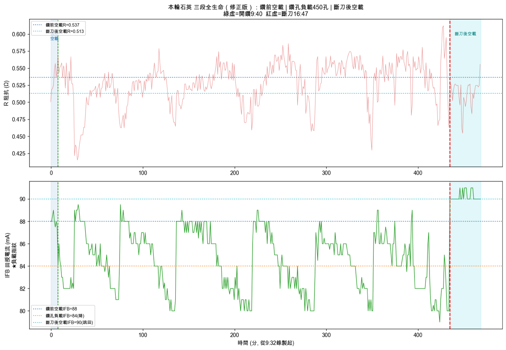
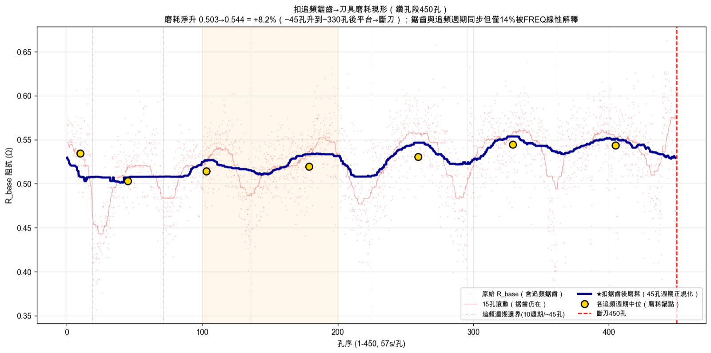
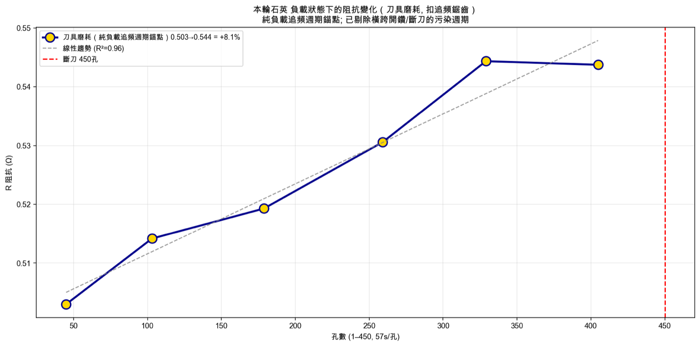
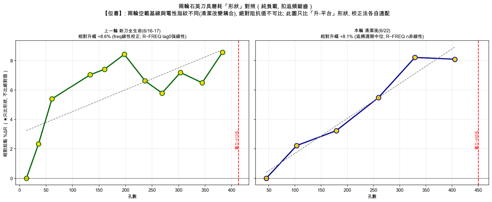

為什麼要用電性訊號來監測刀況？
石英脆硬、微鑽尖徑極小，傳統接觸式刀具量測既困難、又得中斷加工。但旋轉超音波加工（RUM，Rotary Ultrasonic Machining）有個天然優勢：超音波換能器本身就是一個對「刀尖機械負載」敏感的感測元件。
刀尖一接觸工件，等效機械阻抗就改變，這個改變會反映到驅動器的電流與功率回授上。換句話說——驅動器的電性訊號，就是一個免費、即時、非接觸的刀況代理量。
一輪加工的三個狀態，電流看得最清楚
一輪完整加工自然分成三段。我們刻意在開鑽前、斷刀後各收集一段空載訊號，與中間的鑽孔負載對照。最乾淨的判別量是回授電流（IFB）：
| 狀態 | 回授電流 IFB | 說明 |
|---|---|---|
| 鑽前空載 | 88 mA | 基準 |
| 鑽孔負載 | 84 mA | 換能器被加載 → 電流下降 |
| 斷刀後空載 | 90 mA | 負載消失 → 電流跳回 |
這條「下降 → 跳回」的台階，把加工負載的起點與終點標得清清楚楚。

最大的干擾：把「追頻鋸齒」拿掉，磨耗才現形
監測磨耗最大的障礙，是驅動器的自動追頻。驅動器會持續追蹤共振頻率；當頻率因發熱漂移到追頻範圍（TrackRange ≈ 100 Hz）邊界，就跳回初始鎖頻點，形成一個週期性的鋸齒（本輪約 45 孔一個週期）。
這個鋸齒讓阻抗在 ±10% 之間來回擺動，幅度遠大於磨耗本身，把磨耗的緩慢上升完全蓋住。
去趨勢的正確做法，是順著這個物理機制走：偵測每一個追頻週期、取週期內的中位數，並剔除橫跨「負載／空載邊界」的污染週期（開鑽處與斷刀處的週期會混入空載，必須排除）。

扣掉鋸齒後，磨耗訊號乾淨浮現：刀具等效阻抗從開鑽後穩定上升 +8.1%（R²=0.96），約 330 孔後進入平台，接著在 450 孔斷刀。
電性磨耗，領先肉眼可見的崩邊
本輪在約 100–200 孔，阻抗開始明顯上升；而入孔的脆裂邊，是從 200 孔起才肉眼可見地變大。
也就是說——電性磨耗訊號，領先實體崩邊約 100 孔出現。兩條互相獨立（正交）的證據彼此印證了同一件事：刀刃在約 200 孔附近開始鈍化。而電性的好處是：它走在前面，可以當提前預警。

斷刀的事件指紋
本輪 450 孔斷刀後，仍續錄了約 33 分鐘的空載才關閉紀錄。正是這段斷刀後空載，讓斷刀事件在電性上留下兩個清楚的指紋：
| 時刻 | 電性表現 |
|---|---|
| 斷刀前 | 等效阻抗 R 衝到全程最高（刀刃將斷、切削負載驟增） |
| 斷刀後 | 回授電流 IFB 跳回空載水位（80→90 mA），加工負載驟然消失 |
「斷刀前 R 衝峰 + 斷刀後 IFB 跳回空載」這組合，可作為斷刀事件的判定依據——也說明斷刀後刻意續錄一段空載，是讓斷刀指紋完整成立的關鍵。
兩輪形狀對照（只比形狀，不比絕對值）
我們拿同一設定的前一輪（新刀全生命）做對照。但必須先講清一個邊界：兩輪的空載基線與電性耦合方式不同（夾持清潔改變了耦合形態），所以絕對阻抗值不可直接比，只能比「形狀」。

對換刀決策的啟示
| 啟示 | 依據 |
|---|---|
| 換刀窗建議落在約 200–250 孔 | 此時阻抗升速翻倍、入孔脆裂邊開始劣化，且距斷刀（450 孔）仍有安全餘量 |
| 阻抗進入「峰後平台」可作為接近壽命末期的徵兆 | 本輪約 330 孔後進入平台，450 孔斷刀 |
| 監測不需任何額外感測器 | 直接用既有的驅動器電性回授線上實施 |